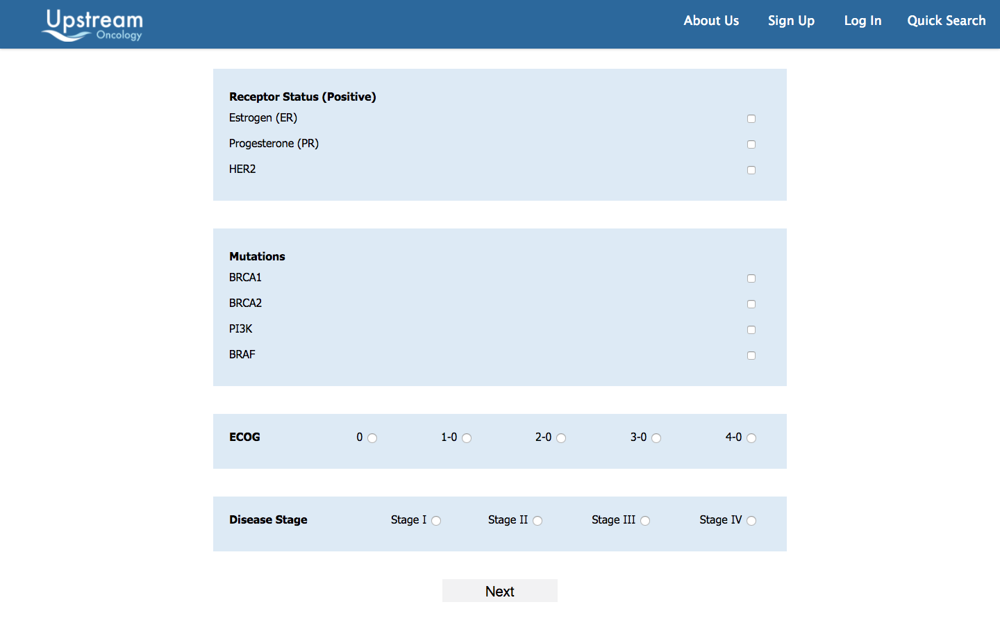

The Challenge
Upstream Oncology is an early stage startup on the mission of connecting cancer patients to clinical trials
that are relevant and accessible. The CodeBase team was responsible for delivering the skeleton of for a web
applications that connects cancer patients to appropriate clinical trials.
The Solution
The team designed and developed a Ruby on Rails web application that hosts cancer patients as users and allows
researchers to post clinical studies related to cancers calling for participants. The biggest challenge was making
this web application compliant with HIPAA standards that govern restrictions on dealing with medical records for
people, so the application was made to hide identifying information as implement advanced encryption protocols in the
storing patient data. Another notable challenge was designing a user-friendly patient registration process as it
involves collecting extensive medical information. Thus the form was broken up into stages, saving responses as they
are filled out so they can be returned to. A search bar was implemented for marking common indicators of patient
conditions to provide an alternative to sequentially answering each of the required questions. Our UI expert even
designed a new logo and redesigned static pages for Upstream!
